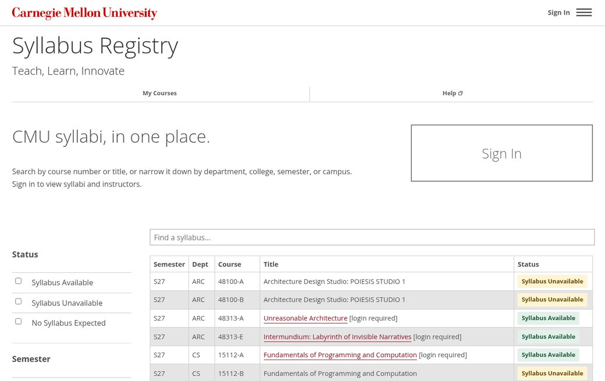
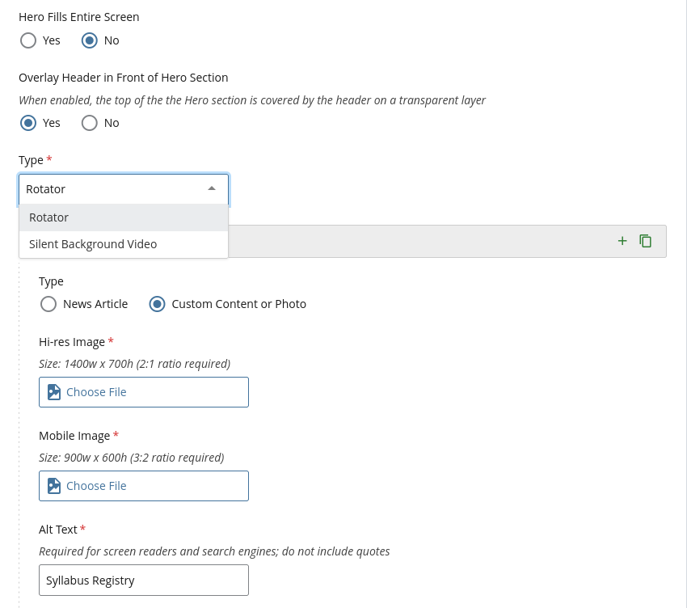
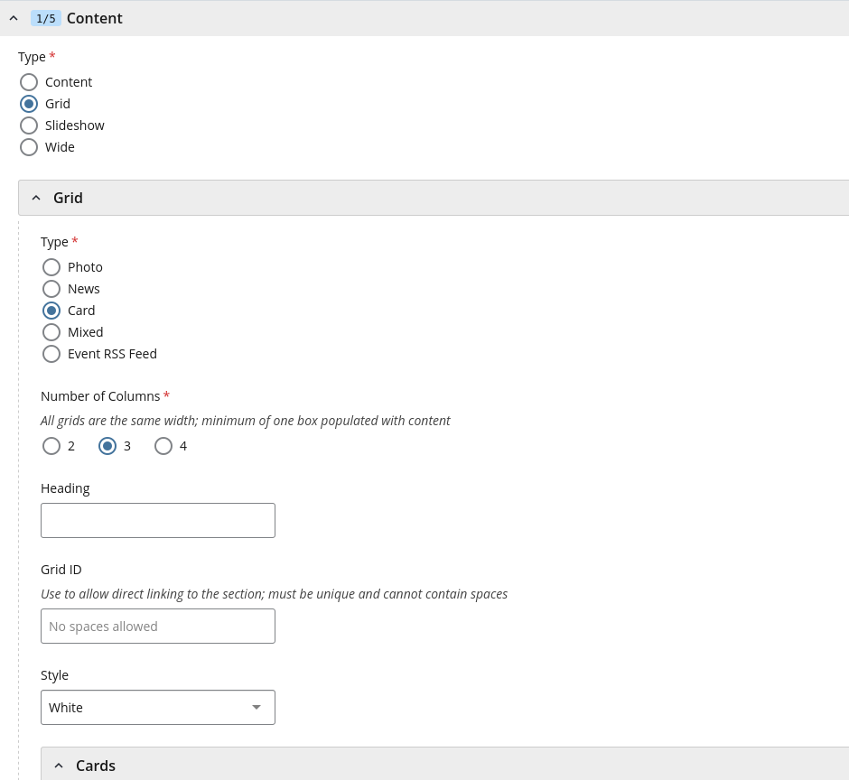
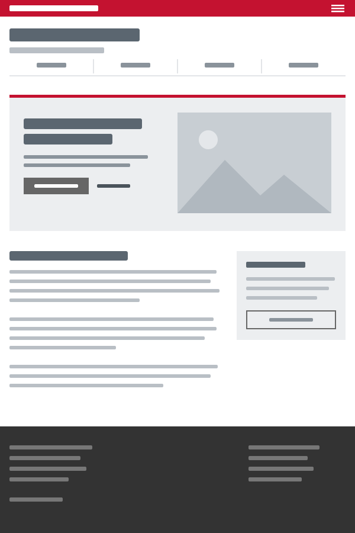
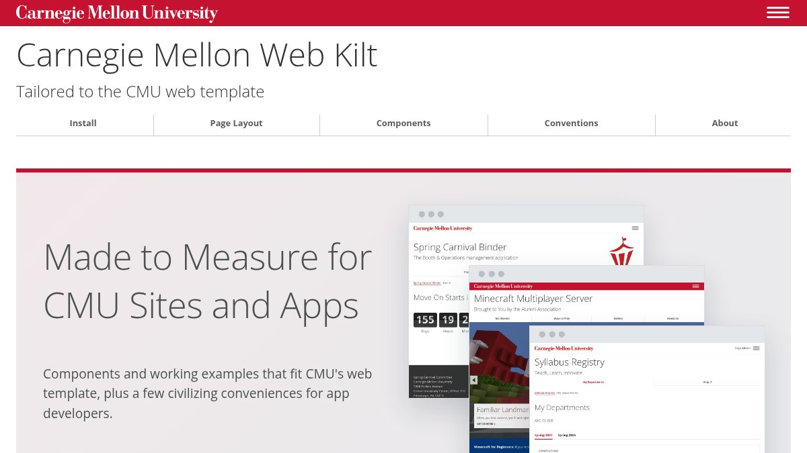
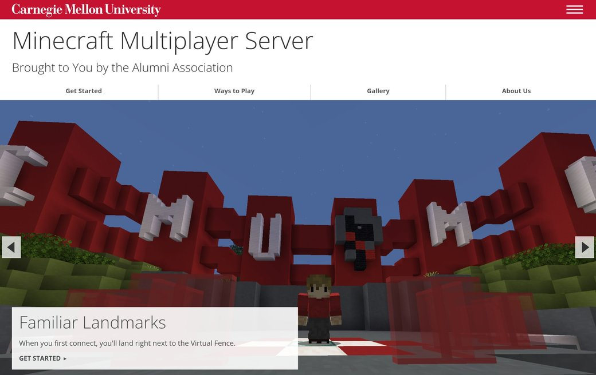
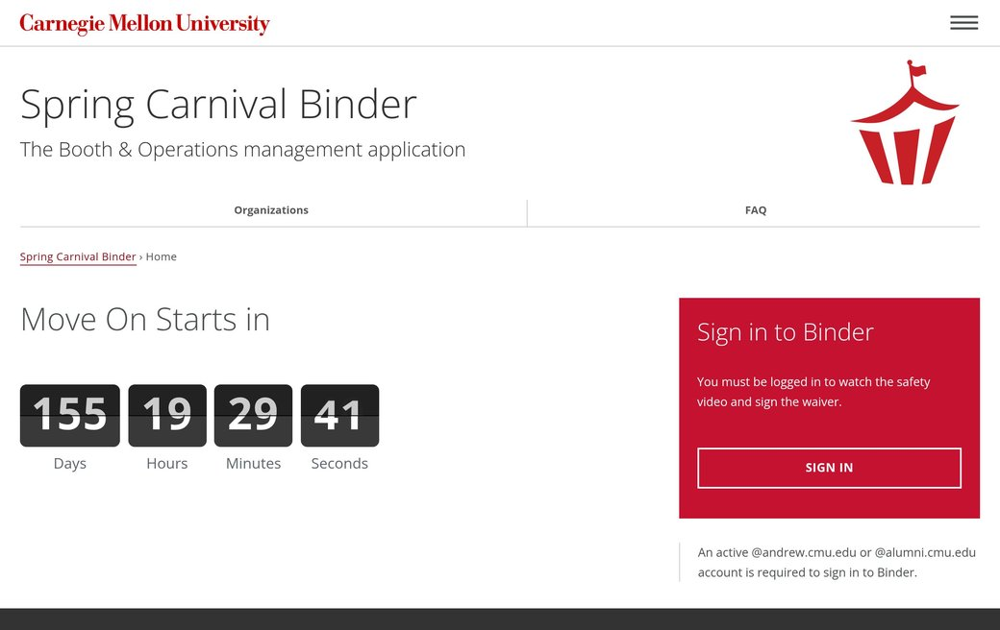

Page Sections
The full-width sections a page is made of, from the hero at the top to cards, features, carousels, timelines and testimonials.
On This Page
Split Hero CMSScript
The top of a home page: copy on the left, art on the right. It becomes one column
below 820px. Use it at the top of a
service description's home page. Lead with
a tagline that says what the app does, then a button for the main action and a "Get
Started" call to action that jumps to the first section below, headed Get Started. The
tagline is the page's <h1>, and so is each section's heading after
it (see Stacking Sections). Under the buttons, an optional
note (cmu-cta-note) can answer the one
question the button raises, such as what to sign in with. Keep it to a short line, and
leave it out when the page answers it further down. The art can be:
- One screenshot, drawn in a browser frame.
-
Two or three screenshots, overlapping, with
cmu-hero-art--stack. They're cropped to the same shape from the top, and the last one is in front, so put the main one last. To let people see one up close, link it to its full-size image withdata-cmu-zoom(see Enlarge on Click). -
A screenshot and a phone, with
cmu-hero-art--phone: the page in a browser window, with the same page on a phone in front of it. Use one of each; anything after the phone doesn't show. The phone is a phone screenshot (figure.cmu-shot cmu-shot--phone). With one screenshot or a phone,data-cmu-addresson the art shows the page's address in the browser bar (see Screenshots). -
A photo with no frame, with
cmu-hero-art--plain: the place, the people or the thing the page is about.
The rule along the top and the tint behind the copy are CMU red. To set one site's
hero apart from another's, add an accent from the CMU tartan's threads:
cmu-hero--blue, cmu-hero--teal,
cmu-hero--green or cmu-hero--gold. Use one accent across a
site.
Classes
cmu-hero, cmu-hero--blue, cmu-hero--teal,
cmu-hero--green, cmu-hero--gold, cmu-hero-art,
cmu-hero-art--stack, cmu-hero-art--phone,
cmu-hero-art--plain, cmu-cta-note
With One Screenshot
One screenshot beside the words:
CMU Syllabi, in One Place
Find a course's syllabus before you register.

With Several Screenshots
Two or three screenshots, each linked to enlarge on click:


With a Screenshot and a Phone
The same page on a computer and a phone:
Made to Measure for CMU Sites and Apps
Components that fit CMU's web template, on any screen.


A photo:
<div class="cmu-hero-art cmu-hero-art--plain">
<img src="images/checkout-desk.jpg" alt="The equipment checkout desk, with camera kits on the shelves behind it.">
</div>Full-Width Photo Hero Template
A full-width photo at the top of a page, before the breadcrumbs. It's a
div.hero with the photo as its background: a 900 × 600 version in
style for phones, and a 1400 × 700 version in
data-img, which the template's script swaps in on wider screens. Give it
role="img" and an aria-label describing the photo. On a page
with a hero, the template drops the line under the header's tabs, since the photo sits
right below them.
Over the photo, either a line of text in a dark box (div.text, with an
<h1> and an optional <h2>), or a white box that
links somewhere (a.box, with left or right).
Options: tall fills the window and adds an arrow down to the page, a
p.caption puts a line of text in a white strip near the bottom, and
small or large on the box sets its width.
mask lays a fine screen over a soft, low-resolution photo.
For a service description, the kit's split hero with screenshots usually says more than a photo.
Classes
hero, text, box left, box right,
small, large, caption, tall,
mask
With Text in a Dark Box
A line of text in a dark box, with an optional second line under it:
In WordPress
On a page with the Full-Width Sections template, add a Custom HTML block first with the hero's HTML.
With a Linked Box
A white box that links somewhere, on the left or the right:
In Cascade
- In the page's content, set Include Hero Section to Yes.
- Set Type to Rotator, with one panel of Custom Content or Photo. Add the Hi-res Image (1400 × 700), the Mobile Image (900 × 600) and the Alt Text.
- Text Overlay puts words over the photo: Centered Text (a heading of up to 40 characters), Text Box (left or right, a third to two-thirds wide, with an optional link), Caption or None.
More panels make it rotate, and Silent Background Video plays a video instead of a photo.

As a Slideshow
Several heroes in a section.js-flickityCustom make a slideshow, with the
template's carousel script loaded after its main one. It never
moves by itself. It only works as the first thing in the page's content, where a hero
goes anyway. Label the section as a carousel and each hero as a slide. People rarely
look past the first slide, so put the most important one first:
<section class="js-flickityCustom" aria-roledescription="carousel" aria-label="Highlights">
<div class="hero" role="group" aria-roledescription="slide" aria-label="1 of 3"
data-img="images/kits-1400.jpg" style="background-image:url(images/kits-900.jpg)">
<a class="box left" href="kits/">
<h1>Camera Kits Are Back for Spring</h1>
<p>Reserve one for your class project.</p>
</a>
</div>
<div class="hero" role="group" aria-roledescription="slide" aria-label="2 of 3" …>
…
</div>
</section>Silent Video Hero Template
A photo hero with a silent video looping behind it: add tubular and a
YouTube video's id in data-vid, and the template plays the video and adds
a pause button. Keep the photo: it shows while the video loads, on phones and wherever
the video can't play. Pick a few seconds of motion that loops cleanly and works
without sound. Load YouTube's player and the template's video script after the
template's scripts; a university-provided CMS site adds them itself:
<script src="https://www.youtube.com/iframe_api"></script>
<script src="https://www.cmu.edu/common/standard-v6/js/tubular-reload.min.js"></script>
Many CMU videos are wide-screen, wider than 16:9, and YouTube pads them with black
bars above and below. Add cmu-video-wide to the hero to give it a
wide-screen shape (2.5 to 1), so the bars fall outside it. Check the video at a wide
and a narrow window; a video close to 16:9 doesn't need it.
Classes
hero tubular, data-vid, cmu-video-wide
My heart is in the work. Classes start Jan. 12.
In WordPress
On a page with the Full-Width Sections template, add a Custom HTML block first with the hero's HTML. The theme loads the template's video player.
In Cascade
Set the hero's Type to Silent Background Video, with the video's
YouTube id and the same two photos. Hero Fills Entire Screen is
tall.
Stacking Sections Template
A page can be a run of full-width sections, one after another: a
.content block, a grid, a section bar, another grid. On a real page they
go straight inside #content, not inside one another; the examples below
sit in boxes only to show them here. In Cascade, each is a content section of its own
(Content, Grid, Slideshow or Wide).
<main id="content">
<div class="breadcrumbs"> … </div>
<div class="content"> … </div>
<div class="grid column2 red invert"> … </div>
<div class="grid column2 grey boxes"> … </div>
<div class="content wide red invert globe"> … </div>
<div class="grid column2"> … </div>
</main>
Each section's heading is an <h1>, and headings inside a section (a card, a sub-topic) are <h2> and
below. That holds for every section, including the first one after a hero: the hero's
tagline is an <h1> too, and stays the biggest heading on the page.
Pick levels by what a heading contains, never by where it falls on the page; screen
reader users skim a page by its heading levels.
Background Patterns Template
Two background patterns that go with a color: globe, a faint map, and
plaid, the university tartan. Both come from the template's own image
files and follow the brand rules; never draw your own tartan. Use one for a section
bar or a feature section, not behind long text. The template shows them only from
768px up; on phones the color is plain, and grey plaid has no gray at
all, so don't count on the pattern to set a section apart. In Cascade, it's a
section's Background Image: Globe or Plaid.
Classes
globe, plaid, with a color
red invert globe
darkgrey invert globe
grey globe
red invert plaid
darkgrey invert plaid
grey plaid
<div class="content wide red invert globe"> … </div>
<div class="grid column3 darkgrey invert plaid"> … </div>Section Headings With a Line Template
Add the template's rule-top to a heading or eyebrow to mark a new section
with a thin line above it. Spacing is automatic. The line is hidden right after a
section with a background color and turns white in a section with invert.
Use rule-bottom for a line below a heading, as in the
sidebar.
Classes
rule-top, rule-bottom
Lecture Recording
We record your lecture or event and send you a link to the video, captioned.
Captioning
Send us a video and we'll caption it, usually within a week.
In WordPress
Add a Heading block and choose With a Line under Styles.
Section Bar Template
A full-width bar with a background color and a heading, to start a new part of a long
page, often with the globe. It's a .content wide block with a color; give
it an id to link to it.
For a statement instead of a heading, such as a mission, use a lighter section with
the text centered: grey plaid, which the template fades so dark text
stays readable. On phones it's plain white, since the template drops the plaid there
(see Background Patterns), so don't count on it to set the
statement apart.
Classes
content wide, red invert globe
With a Heading
The section holds just a heading:
2026-27 Fellows
In Cascade
In the page's content, add a section with the green + on any section, then set its Type to Wide, its Style to Red and its Background Image to Globe. Put the heading in its content.
With a Statement Instead of a Heading
Here, a statement in a lighter section:
Equipment Checkout is run by Teaching Technology. Borrow cameras, lenses and tripods for your CMU course, free for up to a week.
Card Grid CMS
A grid is two, three or four columns that stack on phones. With
grey boxes, each column is a white card in a gray section. An
<h1> first in the grid is the section's heading, across the top.
Keep the cards short; a card that leads somewhere ends with a call to action. To send
people to other pages, use Path Cards. For a line
across the section's full width, such as an introduction under the heading or a link
to see more after the cards, use <p class="cmu-grid-full"> (the
kit's only addition here). For which color to use, see
Colors.
When the cards' pictures differ in height, add cmu-cards-bottom to the
grid: each card's heading, words and link sit at its bottom, lined up across the row,
and the picture is centered in the space above. To keep everything at the top and line
up only the links, add cmu-cards-links instead: each card's last
paragraph, its link or call to action, sits at the card's bottom.
Classes
grid, column2, column3, column4,
boxes, cmu-grid-full, cmu-cards-bottom,
cmu-cards-links
With Text Only
Each card a heading and a sentence, with a call to action where it leads somewhere:
Buggy Facts
Since 1920
Teams have raced buggies through Schenley Park nearly every spring since 1920.
Headfirst
Drivers ride lying down, headfirst, inches above the road.
In WordPress
Insert Patterns › Carnegie Mellon Web Kilt › Card Grid on a page with the Full-Width Sections template, then change the cards.
With Pictures of Different Heights
Add cmu-cards-bottom to the grid:
With Links Lined Up
Add cmu-cards-links to the grid:
Teams
Each team's buggies, drivers and pushers, with a page for every organization that races.
In Cascade
- In the page's content, add a section with the green + on any section, then set its Type to Grid.
- Under Grid, set Type to Card, choose the Number of Columns and add a Heading.
- Set Style to Grey, then fill in a Cards item for each card.

How It Works CMS
A process in a few numbered columns, for an overview. For instructions people follow, use numbered steps instead.
Classes
ol.cmu-flow
- Instructors add syllabiOn the web or from Canvas.
- Departments fill the gapsUpload for many sections at once.
- Everyone can find themSearch by course, semester or department.
Feature Section Template
A red section with a picture on one side and a heading, a few sentences and a button
on the other, to make one thing stand out on a page. It's a two-column grid in
red invert: the first column holds the image. On red, use the white
outline button, btn ghost.
Classes
grid column2 red invert, btn ghost
New This Semester
Find a Syllabus Before You Register
Every course section and its syllabus, from this semester back to 2015, in one place.
Text With a Screenshot CMS
Two columns: text on the left, a framed screenshot with a caption on the right. One
column below 760px. Add cmu-shot--browser (see
Screenshots) to draw the screenshot in a browser
window, like the hero's art, as the Gallery does.
Classes
cmu-split, figure.cmu-shot, cmu-shot--browser
Find a Syllabus
- Search by course number, title or instructor.
- Narrow it down with the filters on the left.
Annotated Image
An image, such as a screenshot or a diagram, with numbered callouts that name its parts, so people can read it part by part. Align each callout beside its part of a tall image, or pin each one to its part with a numbered marker.
-
Name each part. Use a
callout with a
cmu-labeltitle. If a part has its own page, add a call to action linking to it. -
Line up callouts on a tall image. Set
--cmu-aton each callout to the middle of the part it describes: 0 is the top of the image, 0.5 is halfway down, and 1 is the bottom. Keep the introduction short enough to end above the first callout. -
Pin parts that sit side by side. Add
cmu-annotated--pins, give each callout anid, and put ana.cmu-annotated-pinwith the callout's number in the figure after the image for each part, linking to its callout. Set--cmu-xand--cmu-yto the middle of the part: 0 to 1 across and down the image. A negative--cmu-yputs a pin on a browser window's bar, above the image. Pointing at a pin turns its callout the pins' red, and pointing at a callout lights its pin. Clicking a pin or its callout keeps both lit, and clears any other pair, until either is clicked again; on narrow screens, where the callouts drop below the image, a pin also scrolls to its callout. Name each pin with anaria-label, such as "Note 1, Site Name." The image keeps its own size. -
Give longer text more room. Below 50rem (800px), the component
stacks the introduction, callouts and image. Add
cmu-annotated--widefor longer introductions or callouts; it keeps them stacked until the component has 70rem (1120px) of space.
Classes
cmu-annotated, cmu-annotated-text,
cmu-annotated-notes, cmu-annotated--wide,
--cmu-at, cmu-annotated--pins,
cmu-annotated-pin, --cmu-x, --cmu-y,
cmu-callout
Aligned Callouts CMS
Each callout lines up beside its part of a tall image:
-
1. Header
The red strip, then the site's name and its navigation.
-
2. A Section
A full-width section with its own color, here a hero with a heading, a button and a photo.
-
3. Content and Sidebar
The page's own text, with boxes beside it for links, contacts or signing in.
-
4. Footer
The office's address and links, the same on every page.


Pinned Callouts CMS
Each callout has a numbered pin on its part, anywhere on the image:
The top of a home page on CMU's template.
-
1. Red Strip
The template's strip with the CMU wordmark, on every page.
-
2. Menu Button
Opens the menu, with every page of the site.
-
3. Site Name
The site's name, linking to its home page.
-
4. Tagline
A short line about the site, under its name.
-
5. Tabs
The site's main sections, one tab each.
-
6. Hero Heading
What the site is for, in a few words.
-
7. Hero Text
A sentence that says a little more.
-
8. Screenshots
What the site looks like in use.

1 2 3 4 5 6 7 8Photo Grid Template
Linked photos with a title over each, three or four across. The whole photo is the
link. Use
column2, column3 or column4; an
<h1> first in the grid is its heading, across the full width. Only
an <h1> spans the grid: a paragraph inside it becomes one of the
cells, so put any sentence about the photos in their titles instead. Use photos that
are all the same shape (such as 3:2, at 900 × 600), or the rows come out ragged
and the titles don't line up. At four across, keep titles to two or three words, or
they wrap; a sentence under the title fits at two or three across. On phones the
photos stack. For people, see Bio Photo Grid.
No photos yet? Fill the grid with CMU photos from PlaceMellon while you build, and swap in the real ones when they're ready.
Classes
grid, column2, column3, column4,
photos, photo
In Cascade
A Grid section, as for Card Grid, with its Type set to Photo. Each photo has an Image (700 wide, all the same size), Alt Text, a Headline over the photo and a Link. For people, a Bio Index can build it from their bio pages: choose Grid, then Photo (see Bio Card Grid).
Circle Photos Template
Square photos cropped to circles, beside a few paragraphs each. Add
circle to the image, use a square photo and alternate which side it's on.
A content wide block holding an <hr> separates each
pair.
Classes
circle, grid column2

Students
Join the queue for any of your courses, and see how many people are ahead of you.
Course Staff
Open office hours, call the next student and see who's waiting.
Carousel Template
Feature sections that slide, with arrows at the sides and a dot for each slide. Put
two or more grid column2 slides in a js-flickityCustom, and
load the template's carousel script after its main one (Cascade adds it for you):
<script src="https://www.cmu.edu/common/standard-v6/js/flickity.pkgd.min.js"></script>
It never moves by itself. Turn off the dots or arrows with
data-navDotsVisible="false" or
data-navArrowsVisible="false", and stop it going round from the last
slide to the first with data-wrapAround="false". On phones the arrows sit
over the slides' headings; turn them off there if your headings are long, since people
can swipe instead.
Use these sparingly. People rarely look past the first slide, so put the most important one first, and don't put anything people need in a later slide.
Classes
js-flickityCustom, grid column2
On a Light Background
Straight on the page, or in a light section without invert, with the
template's dark slate dots:
Find a Syllabus Before You Register
Every course section and its syllabus, from this semester back to 2015.
Office Hours Without the Line
Join the queue from anywhere and see how many are ahead of you.
Borrow What Your Project Needs
Cameras, laptops and lights, free for CMU courses.
In Cascade
In the page's content, add a section with the green + on any section, then set its Type to Slideshow and its Style to White. Add a Slide for each, with an Image (700 wide, all the same size), Alt Text and Content.
On a Dark Background
In a section with a dark background color and invert, such as
darkgrey invert, every slide takes the color and the dots turn white:
Find a Syllabus Before You Register
Every course section and its syllabus, from this semester back to 2015.
Office Hours Without the Line
Join the queue from anywhere and see how many are ahead of you.
Borrow What Your Project Needs
Cameras, laptops and lights, free for CMU courses.
In Cascade
The same Slideshow, with its Style set to Dark Grey.
Scroll Gallery CMSScript
A gallery that moves as you scroll: a few steps of text, each with a screenshot or
photo, for showing a set of projects or walking through what a site does. On a wide
screen, the text scrolls on the left while the picture stays in place on the right and
changes as each step reaches the middle of the window, fading up by default or, with
cmu-scroll-gallery--slide, sliding in from the side.
- Each step holds its own figure, so on a phone, or without the script, the steps stack with their pictures in place.
- Keep it to three to five steps, each a heading, a sentence or two and at most one link.
- Pictures the same shape keep the stage from jumping as it changes.
Classes
cmu-scroll-gallery, cmu-scroll-gallery--slide,
data-cmu-scroll-gallery, cmu-scroll-gallery-step
With Pictures That Fade Up
By default, each picture fades up as its step reaches the middle of the window:
A Minecraft Server for Alumni
How to join CMU's Minecraft server, with a slideshow of the campus landmarks you'll find there.

Booths for Spring Carnival
Booth and operations management, with a countdown to Move On and a sign-in box.

Every Syllabus in One Place
Course sections and their syllabi by semester, with status pills and filters.
Use this markup in a {framework} component, and render the steps once: when the gallery
first appears, cmu-app.js adds a stage of its own inside it and copies the
figures there, so it doesn't see later changes to them. To show different steps, render
a new gallery.
Nothing more to do in Rails: use this markup in a view. cmu-app.js starts
it, Turbo visits and cached pages included.
With Pictures That Slide In
With cmu-scroll-gallery--slide, the pictures slide in from the side:
Use this markup in a {framework} component, and render the steps once: when the gallery
first appears, cmu-app.js adds a stage of its own inside it and copies the
figures there, so it doesn't see later changes to them. To show different steps, render
a new gallery.
Nothing more to do in Rails: use this markup in a view. cmu-app.js starts
it, Turbo visits and cached pages included.
Timeline Cards Template
The steps of a process in date order, a card for each with a small icon, the step's
name and its dates, in a dark section. It's a
grid column4 darkgreen boxes (or column3) with an
<h1>.
-
Each step's name is an
<h2>, right after its icon. Names may wrap to two lines. A name can link to its section further down the page; it then shows in the template's link red. -
Choose an icon for each step. Use
floatrightto place it beside the heading. See Icons for setup and usage. -
Put the icon, name and any text in a
<div>, then the rule and the date after it. The kit sets the rule and date at the bottom of each card, and the dates line up across a row. -
The dates go under a rule, bold and centered with
aligncenter. - Keep to the same years in each card, or show the year on every date, so the order is clear at a glance.
Style
Write date ranges with a hyphen and no spaces, such as “Jan. 11-15”; see Conventions for dates.
Classes
grid column4 darkgreen boxes, floatright,
aligncenter, bi
Spring 2027 Timeline
Uploads Open
Upload from the web or from Canvas, in any common file format, and replace it any time before classes end.
Nov. 2, 2026
Reminders to Instructors
Dec. 7-18, 2026
Classes End
May 7, 2027
Testimonial CMS
A quote from a student, alumnus or colleague, with their name, their role and a square
photo beside it. Put it in its own section on a color, such as
content wide cmu-lightgrey. On phones the photo goes above the quote.
- Quote real people, with their permission, and keep it to a sentence or two. Quotation marks around the words are optional; the red mark already says it's a quote.
-
Put their name in
<strong>inside the<cite>, then their role or class on the next line. -
Describe the person in the photo's
alt, not the quote. Use a square photo; the kit crops other shapes to a square.
Classes
cmu-testimonial, cmu-lightgrey
Reserving a camera took a minute, and the kit had everything our film needed.
Senior, School of Drama